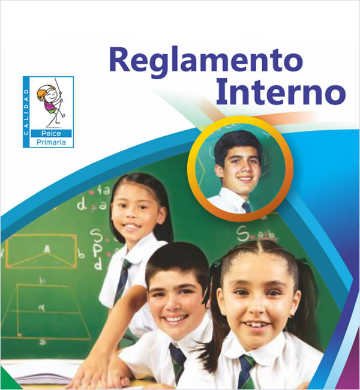
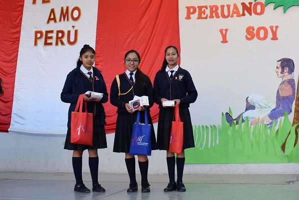
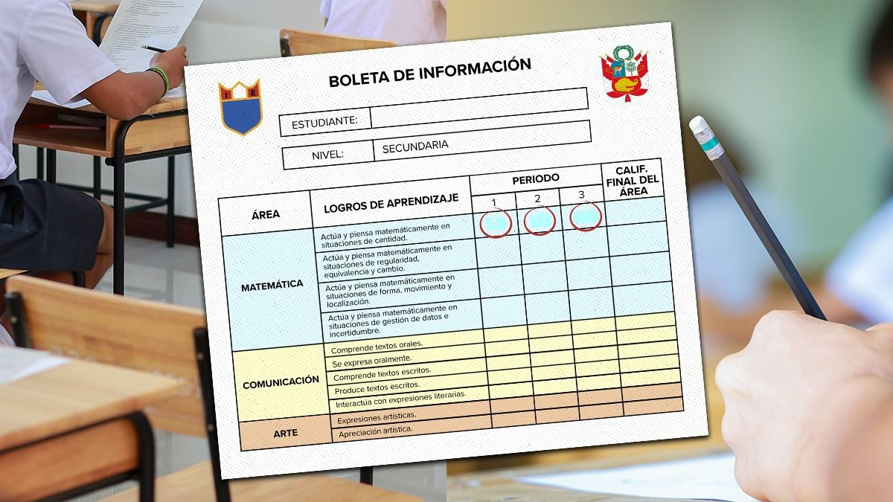

En el Perú se realizan diferentes Tradiciones para conmemorar en el mes de Julio su aniversario de Independencia. Este año se cumplen 201 años de haberse declarado la Independencia y en las Fiestas Patrias nuestra Identidad y Patriotismo sale a relucir con costumbres que aún se mantienen vigentes.
Reglamento Interno

El Colegio San Rafael, consciente de la responsabilidad en la gestión pedagógica, administrativa e institucional, formula y aplica su Reglamento Interno que regula la organización y funcionamiento integral, con la finalidad de garantizar la calidad y eficiencia del servicio educativo.
Actividades Resumen

El 23 de abril se celebra el Día del Libro, una fecha ideal para organizar actividades relacionadas con la lectura. Es probable que estés en búsqueda de inspiración para crear una dinámica diferente, que entusiasme a participar.La finalidad de esta actividad es motivar a conocer nuevos libros de una forma fácil.
Actividades por el Día de la Juventud
Se convoca a los estudiantes al “Concurso de Dibujo y Pintura por el día de la juventud” con los temas: ¿Qué es lo que aprendiste en esta situación de pandemia?. El concurso tiene por objetivo incentivar la creatividad,y que puedan expresar sus pensamientos y sentimientos.La primavera es sinónimo de vida, juventud y color.
Entrega de libreta de notas

Estimados directores y docentes aquí les hacemos llegar la boleta de notas oficiales para que puedan usarlas en la entrega de boletas a sus padres de familia, lo cual ayudará a las clausuras oportunas del año escolar, sobre todo si su Institución Educativa sufre de las inclemencias temporales de la naturaleza.
Actividades por el Día del Maestro
El 6 de julio se celebra en todo el Perú el Día del Maestro y Derrama Magisterial, institución previsional del magisterio nacional, tiene preparada una serie de actividades para homenajear y conmemorar el gran trabajo que realizan los docentes en la formación de las actuales y futuras generaciones.